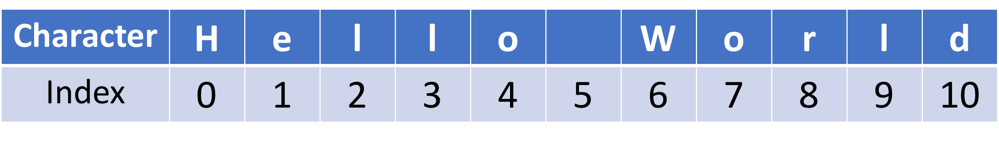

This notebook contains an excerpt from the Python Programming and Numerical Methods - A Guide for Engineers and Scientists, the content is also available at Berkeley Python Numerical Methods.
The copyright of the book belongs to Elsevier. We also have this interactive book online for a better learning experience. The code is released under the MIT license. If you find this content useful, please consider supporting the work on Elsevier or Amazon!
< 2.1 Variables and Assignment | Contents | 2.3 Data Structure - Lists >
Data Structure - Strings¶
We talked about different data types, such as int, float and boolean, these are all related to single value. The rest of this chapter will introduce you more data types so that we could store multiple values. The data structure related to these new types are Strings, Lists, Tuples, Sets, and Dictionaries. We will start with the strings.
A string is a sequence of characters, such as “Hello World” we saw in chapter 1. Strings are surrounded by either single or double quotation marks. We could use print function to output the strings to the screen.
TRY IT! Print “I love Python!” to the screen.
print("I love Python!")
TRY IT! Assign the character “S” to the variable with name s. Assign the string “Hello World” to the variable w. Verify that s and w have the type string using the type function.
s = "S"
w = "Hello World"
type(s)
str
type(w)
str
Note that a blank space, ” “, between “Hello” and “World” is also a type str. Any symbol can be a char, even the ones that have been reserved for operators. Note that as a str, they do not perform the same function. Although they look the same, Python interprets them completely differently.
TRY IT! Create an empty string. Verify that the empty string is a str.
s = " "
type(s)
str
A string is an array of characters, therfore it has length to indicate the size of the string. For example, we could check the size of the string by using the built-in function len.
len(w)
11
Strings also have indexes to indicate the location of each character, so that we could easily find out some character. The index of the position start with 0, as shown in the following picture.

We could get access to any character by using a bracket and the index of the position. For example, if we want to get the character ‘W’, then we need to do:
w[6]
'W'
We could also select a sequence as well using string slicing. For example, if we want to get the “World”, we could do the following command.
w[6:11]
'World'
[6:11] means the start position is from index 6 and the end position is index 10. For Python string slicing range, the upper-bound is exclusive, which means that [6:11] is actually to slice the characters from 6 -> 10. The syntax for slicing in Python is [start:end:step], the 3rd one - step is optional.
You can ignore the end position if you want to slice to the end of the string. For example, the following command is the same as the above one:
w[6:]
'World'
TRY IT! Retrieve the word “Hello” from string w.
w[:5]
'Hello'
You can also use negative index when slice the strings, which means counting from the end of the string. For example, -1 means the last character, -2 means the 2nd to last and so on.
TRY IT! Slice the “Wor” within the word “World”.
w[6:-2]
'Wor'
TRY IT! Retrieve every other character in the variable w
w[::2]
'HloWrd'
Strings can not be used in the mathematical operations.
TRY IT! Use ‘+’ to add two numbers. Verify that “+” does not behave like the addition operator, +.
1 "+" 2
File "<ipython-input-13-46b54f731e00>", line 1
1 "+" 2
^
SyntaxError: invalid syntax
WARNING! Numbers can also be expressed as str. For example, x = '123' means that x is the string 123 not the number 123. However, strings represent words or text and so should not have addition defined on them.
TIP! You may find yourself in a situation where you would like to use an apostrophe as a str. This is problematic since an apostrophe is used to denote strings. Fortunately, an apostrophe can be used in a string in the following way. The backslash (\) is a way to tell Python this is part of the string, not to denote strings. The backslash character is used to escape characters that otherwise have a special meaning, such as newline, backslash itself, or the quote character.
'don\'t'
"don't"
One string could be concatenated to another string. For example:
str_a = "I love Python! "
str_b = "You too!"
print(str_a + str_b)
I love Python! You too!
We could convert other data types to strings as well using the built-in function str. This is useful, for example, we have an variable x that stored 1 as an integer type, if we want to print it out directly with a string, we will get an error saying we can not concatenate string with an integer.
x = 1
print("x = " + x)
---------------------------------------------------------------------------
TypeError Traceback (most recent call last)
<ipython-input-16-3e562ba0dd83> in <module>()
1 x = 1
----> 2 print("x = " + x)
TypeError: can only concatenate str (not "int") to str
The correct way to do it is to convert the integer to string first, and then print it out.
TRY IT! Print out x = 1 to the screen.
print("x = " + str(x))
x = 1
type(str(x))
str
In Python, string as an object that has various methods that could be used to manipulate it (we will talk more about object-oriented programming later). They way to get access to the various methods is to use this patter “string.method_name”.
TRY IT! Turn the variable w to upper case.
w.upper()
'HELLO WORLD'
TRY IT! Count the number of occurrence for letter “l” in w.
w.count("l")
3
TRY IT! Replace the “World” in variable w to “Berkeley”.
w.replace("World", "Berkeley")
'Hello Berkeley'
There are different ways to pre-format a string. Here we introduce two ways to do it. For example, if we have two variables name and country, and wants to print them out in a sentence, but we don’t want to use the string concatenation we used before, since it will use many ‘+’ signs in the string. We could do the following instead:
name = "UC Berkeley"
country = 'USA'
print("%s is a great school in %s!"%(name, country))
UC Berkeley is a great school in USA!
WHAT IS HAPPENING? In the previous example, the %s in the double quotation marks is telling Python that we want to insert some strings at this location (s stands for string in this case). The %(name, country) is where the two strings we want to insert.
NEW! There is a different way that only introduced in Python 3.6 and above, it is called f-String which means formated-String. You can easily format a string with the following line:
print(f"{name} is a great school in {country}.")
UC Berkeley is a great school in USA.
You could even print out a numerical expression without convert the data type as we did before.
TRY it! Print out the result of 34* directly using f-String.
print(f"{3*4}")
12
Ok, we learned many things from the data structure - string, this is our first sequence data structure. Let’s learn more now.
< 2.1 Variables and Assignment | Contents | 2.3 Data Structure - Lists >